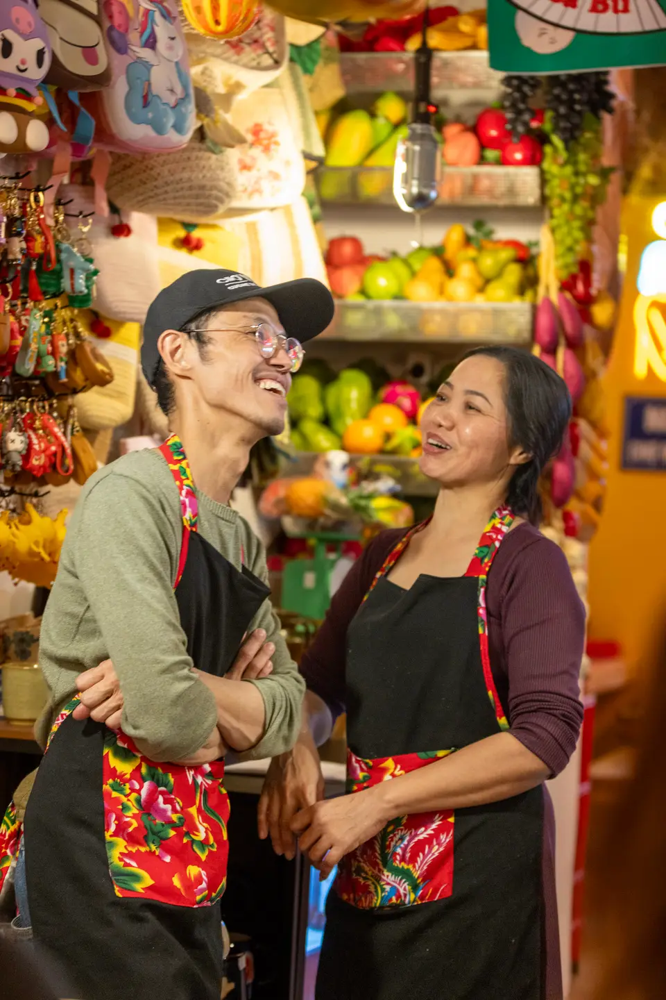
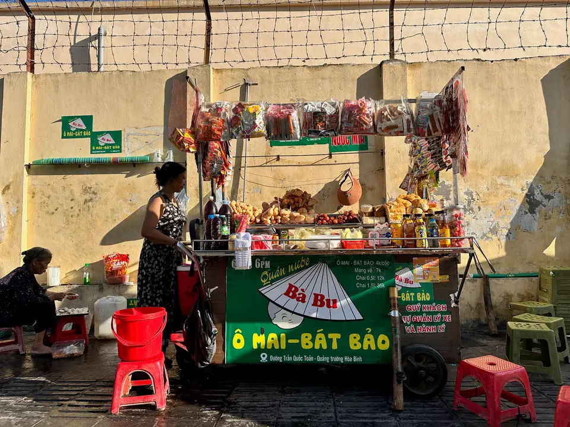
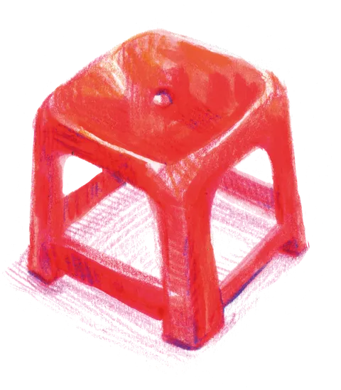
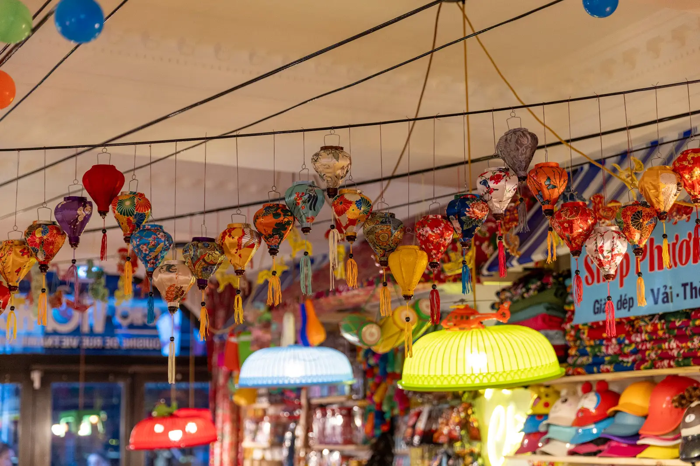
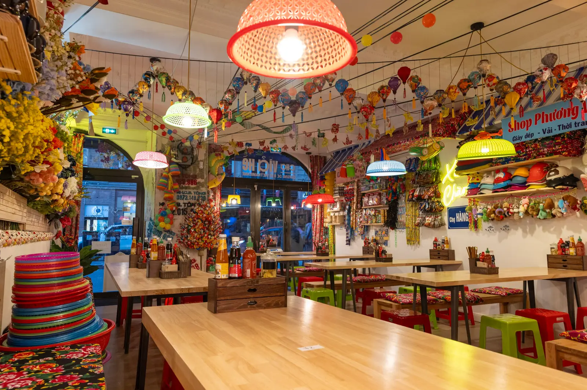
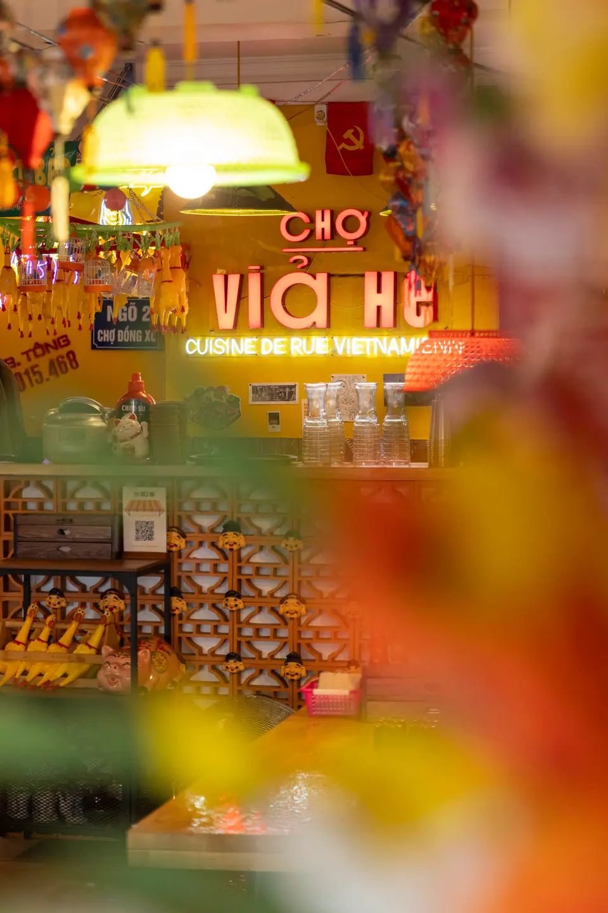

Cuisine de rue vietnamienne, à Toulouse
Réserver une table Feuilleter le carnet ↓

Ngày xửa ngày xưa… il était une fois
Au Vietnam,
le marché fait partie intégrante
des souvenirs d'enfance.
À travers le Chợ Vỉa Hè, nous voulons vous raconter ces petites histoires du quotidien qui font battre le cœur du pays.
C'est ce petit garçon qui, chaque jour, attend le retour de sa maman pour fouiller dans son panier : curieux de savoir ce qu'elle cuisinera, mais surtout en quête d'une friandise glissée en cachette malgré un budget serré.
C'est cette petite fille qui, à la récréation, file au marché voisin avec ses camarades pour s'offrir quelques bonbons.
C'est ce collégien qui, sur le chemin du retour, prolonge un moment avec ses amis autour d'un Kem Xôi et d'un thé glacé, quitte à se faire gronder en rentrant.
C'est cette écolière qui, chaque matin, s'arrête au premier stand de Bánh bao, se laissant envelopper par la vapeur et les arômes de son petit-déjeuner.

Au Chợ Vỉa Hè, c'est un bout de ce Vietnam-là que nous souhaitons partager avec vous : simple, vivant et profondément humain.
Pour vous embarquer dans cette aventure sensorielle et immersive, nous avons arpenté les marchés vietnamiens, déambulé de ruelle en ruelle, flâné au milieu des étals grouillants de vie, nous laissant happer par les couleurs, les odeurs et les saveurs.
Chaque étape fut l'occasion de chiner un élément de décoration : la vaisselle venue du village de céramique de Bát Tràng, les fleurs artisanales façonnées par les grand-mères de Thanh Tiên, les lanternes lumineuses rapportées d'Hội An, les chapeaux coniques de Huế, les tissus soyeux de Vạn Phúc, et mille trouvailles marchandes négociées à Hà Nội… (en nous arrêtant régulièrement pour grignoter et nourrir notre inspiration pour la carte, évidemment !).
C'est dans cette atmosphère unique que nous vous proposons notre version de la cuisine de rue vietnamienne : des plats faits maison, inspirés des Chợ, aux saveurs envoûtantes et équilibrées, simples et sincères, comme une invitation au voyage.



Au Vietnam, les marchés sont bien plus que de simples lieux de commerce. Dès l'aube, ils s'animent comme de véritables carrefours de vie : on y échange des nouvelles, des sourires, des histoires et parfois même les derniers potins. Entre les bruits, les couleurs, les odeurs et la foule, c'est une immersion totale au cœur du quotidien vietnamien — un concentré vibrant de culture et d'énergie.

C'est là, au coin des rues, à même le trottoir, que s'installent les étals débordants : fruits et légumes fraîchement cueillis, viandes et poissons, herbes aromatiques parfumées… mais aussi mille objets du quotidien. Un joyeux désordre, authentique et généreux, qui raconte à lui seul la vie locale.


La cuisine de rue, comme au Vietnam
Un aperçu de ce qu'on sert : du pho au bò bún (bo bun), en passant par le bún chả (bun cha) d'Hà Nội. Les recettes qu'on a rapportées, refaites chaque jour.

Phở
Le bouillon du matin — le pho mijoté des heures, nouilles de riz et herbes fraîches.

Nems
Nems croustillants, roulés à la main, à tremper dans la sauce.

Cà phê
Le café filtre vietnamien, intense, avec ou sans lait concentré.


Un lieu,
vivant, vibrant.
Les néons qui claquent, les couleurs qui débordent, l'énergie qui pulse à chaque recoin.


on en parle
Ils sont passés nous voir
-
Actu Toulouse
« En plein cœur de Toulouse, ce nouveau restaurant vietnamien vous plonge dans un marché de rue »
-
Toulouscope · janvier 2025
« La nouvelle adresse de cuisine de rue qui dépayse : aller simple vers le Viêt Nam »
Ce que nous avons mangé était excellent et goûtu. Le lieu est atypique car on mange entouré d'objets en tous genres comme dans les marchés au Vietnam. Entre la vue, l'odeur et le goût, nous ne regrettons pas notre passage dans ce restaurant que je vous recommande.
Une véritable pépite pour les amateurs de cuisine vietnamienne. Chaque plat s'est révélé savoureux, authentique et parfaitement maîtrisé. Une adresse incontournable. Mention spéciale pour la déco ultra immersive du lieu.
Votre table vous attend.
Réservez votre table en ligne, ou passez nous voir du mardi au samedi, midi et soir. On vous réserve une place à un coin de nos stands ?
Horaires
- Mardi – Samedi 12:00 – 14:30
- Mardi – Samedi 19:00 – 22:30
- Dim. – Lun. Fermé
Nous trouver
8 rue de Metz31000 Toulouse
À deux pas d'Esquirol et des quais de la Garonne, en plein centre de Toulouse.
Ils en parlent
« De la cuisine de rue vietnamienne dans un cadre canon à Toulouse. »
Le Bonbon Toulouse
Questions du comptoir
- Vous avez des plats végétariens ?
- Oui — tofu lắc saté, bò bún végétarien aux protéines de soja à la citronnelle, samoussas aux légumes… Et nous nous adaptons à vos allergies et restrictions alimentaires.
- Comment réserver une table ?
- En ligne en deux minutes via le bouton Réserver, ou par téléphone au 05 62 85 83 92. Ouvert du mardi au samedi, 12h–14h30 et 19h–22h30.
- Où êtes-vous dans Toulouse ?
- Au 8 rue de Metz, à deux pas de la place Esquirol et des quais de la Garonne — métro Esquirol, ligne A. Cherchez l'enseigne néon rouge, elle se voit de loin.